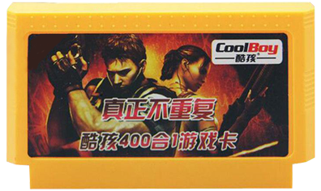

CoolBoy 400 in 1 list of games
CoolBoy 400 в 1 список игр
Buy / Купить
- Super Contra (JP version, 24 in 1 menu)
- Batman (US version, Prototype)
- Spiderman: Return of the Sinister Six (US version, Cut-down version which omits some of the graphics)
- Teenage Mutant Ninja Turtles: Tournament Fighters (US version, no copyrights or storyline)
- Ferrari: Grand Prix Challenge (US version)
- Taito Basketball (JPN version of Ultimate Basketball)
- Guevara (JPN version of Guerilla War)
- Pocket Monster (Pirate Original)
- Tiny Toon Adventures (US version)
- Rolling Thunder (US version)
- Power Blade 2 (US version)
- Terminator 2: Judgement Day (US version)
- Double Dragon III: The Sacred Stones (US version)
- Alien 3 (US version)
- Ninja Gaiden Episode II: The Dark Sword of Chaos (US version)
- Mighty Final Fight (US version)
- Home Alone 2: Lost in New York (US version)
- Astyanax (US version, listed as Golden Axe)
- Robocop 2 (US version)
- Saint Seiya: Ougon Densetsu Kanketsu Hen
- Ring King (US version)
- War of Strike Mouse (Pirate Original)
- Contra (US version)
- Mortal Kombat 4 - Hummer Team (Mortal Kombat 3, graphics aren't glitchy, unlike in 245 in 1)
- Colorful Dragon - Sachen
- Back to the Future
- Arkista's Ring
- Bandai Golf: Challenge Pebble Beach (Crashes upon reaching the green)
- Castle Excellent (JP version of Castlequest)
- Tiger-Heli (US version)
- The Universe Soldier (Pirate Original)
- Dash Galaxy in the Alien Asylum
- Q-Bert
- Egypt
- Alpha Mission (US version)
- Firehouse Rescue
- I Can Remember (Glitchy graphics)
- The Punisher
- Hokuto no Ken
- Hotaaman no Chitei Tanken
- Battleship (US version)
- Milon's Secret Castle (US version)
- Destination Earthstar
- Super Chinese (JP version of Kung Fu Heroes)
- Ikinari Musician
- Super X-Wing 97 (Homebrew Argus hack)
- Baltron
- Mach Rider
- Onyanko Town
- Gyromite
- Monster Truck Rally
- Bingo 75 - Sachen
- Bump'n'Jump (US version)
- Adventures of Dino Riki (US version, title screen is removed)
- Ghostbusters (US version)
- Spy Hunter
- Balloon Monster (Caltron 6-in-1)
- Paper Boy
- T&C Surf Designs
- Hyper Olympic (JP version of Track & Field)
- Battletank
- Aladdin III (Magic Carpet 1001 hack) (Caltron 6-in-1)
- Dynamite Bowl
- Takahashi Meijin no Bouken Jima (JP version of Adventure Island)
- Dr. Mario (Title screen is removed)
- Mickey Mouse: Fushigi no kuni no Daibouken (JPN version)
- Quarth
- Moai-Kun
- Gradius
- Mystery Quest (US version)
- Friday the 13th
- Musashi no Ken - Tadaima Shugyo Chu
- Nagagutsu o Haita Neko: Sekai Isshuu 80 Nichi Daibouken
- Hello Kitty no Hanabatake
- Solomon no Kagi (JP version of Solomon's Key)
- Flipull
- Deblock
- Championship Bowling
- Space Hunter
- Transformers: Convoy no Nazo
- The Karate Kid
- Cadillac
- Gorby no Pipeline Daisakusen
- Star Soldier (US version)
- Argus
- Sansuu 3 Nen
- Peepar Time
- The Legend of Kage (US version)
- Geimos
- Hydlide Special (US version)
- Star Luster
- Exed Exes
- Pac-Land
- Thexder
- The Tower of Druaga
- Super Mario Bros. (PAL version)
- Ninja Hattori Kun: Ninja wa Shuugyou Degogiru no Maki
- TwinBee (Graphics aren't glitched, unlike in 150 in 1 and 245 in 1)
- Front Line
- Elevator Action
- Sqoon (JP version)
- Slalom
- Fire Dragon (Pirate Original)
- Tetris - Tengen
- 1942 (Some letters and numbers are missing)
- Lot Lot
- Fish War (Balloon Fight hack, different music, unlike in 150 in 1, 245 in 1 & Balloon Trip is available)
- Mighty Bomb Jack (JP version)
- Spelunker
- Chinese Chess
- Gyromite
- Mag Max
- B-Wings
- Tag Team Pro Wrestling
- Wrecking Crew
- Spartan X (JP version of Kung Fu)
- Arkanoid
- Dig Dug II (JP version)
- Astro Robo Sasa
- Obake no Q-taro: WanWan Panic (JP version of Chubby Cherub)
- Wonder Ball Nice Code Software
- Xevious (PAL version)
- Soccer
- Challenger
- D.J.Boy (Rollergames hack)
- Little Red Hood - Sachen
- Donald Land
- Porter (graphical hack) (Caltron 6-in-1)
- Dough Boy
- Duck - Bit Corp
- Flappy
- Penguin-kun Wars (Title screen is partly removed)
- Zunou Senkan Galg
- Gun Dec (JP version of Vice: Project Doom)
- Giabbit (Homebrew Super Mario Bros. hack)
- Gradirs (Homebrew Seicross hack)
- Hammerin' Harry (PAL version)
- Sudoku
- Magic Mathematic - Sachen
- Pachi Com
- The Penguin & Seal - Sachen
- Shift (Porter hack) (Caltron 6-in-1)
- Xiao Ma Li (Glitchy title screen)
- Tunny (SonSon hack)
- Isolated Warrior
- Volguard II
- Mario Bros. (Title screen is removed)
- Pac-Man
- Donkey Kong
- Dig Dug
- Bomberman (JP version)
- Star Gate (JP version of Defender II)
- Duck Hunt
- Magic Jewelry (Pirate Original)
- Star Force (JP version, title screen is replaced with the plain text)
- Galaga
- Space Invaders
- Exerion
- Binary Land
- BurgerTime
- Tank 1990 (Battle City hack, only Mode A is available)
- Lode Runner (US version)
- Choplifter
- Ninja-kun: Majou no Bouken
- Antarctic Adventure
- Sky Destroyer
- Excitebike
- Brush Roller (Pirate Original)
- Ice Climber (JP version)
- TaleSpin (US version)
- Zippy Race
- Tennis
- Pinball
- Lunar Ball (JP version of Lunar Pool)
- Pooyan
- Joust177
- Warpman
- Devil World
- Formation Z
- Championship Lode Runner
- Helicopter (Raid on Bungeling Bay title hack)
- City Connection (JP version, graphics aren't glitched, unlike in 245 in 1)
- Baseball
- Yie Ar Kung-Fu
- Golf
- Clu Clu Land
- Urban Champion
- Choujikuu Yousai: Macross (Title screen is removed)
- Nuts & Milk
- Donkey Kong Jr.
- Balloon Fight
- Super Arabian
- Millipede
- Gomoku Narabe
- Field Combat
- Donkey Kong 3
- Mappy
- Popeye
- Orchard Kavass
- Galaxian
- Bird Week
- F-1 Race
- Circus Charlie
- Chack'n Pop
- Road Fighter (Title screen is replaced with the plain text)
- Ikki (Title screen is removed)
- Karateka
- Kinnikuman: Muscle Tag Match (JP version of Tag Team Match: MUSCLE)
- Top Gun Dual Fighters (JP version of Top Gun: The Second Mission)
- Othello - Bit Corp
- 10-Yard Fight
- John Elway's Quarterback
- Karate Champ
- King's Knight (US version)
- Minna no Tabou no Nakayoshi Daisakusen
- Venice Beach Volleyball - American Video Entertainment
- Wolverine
- Sanrio Carnival
- Sky Kid
- Sanrio Cup: Pon Pon Volley
- Sansuu 1 Nen
- Sansuu 2 Nen
- Sansuu 4 Nen
- Sansuu 5 & 6 Nen
- Shockwave - American Game Cartridges
- Choujinrou Senki Warwolf (JP version of Werewolf: The Last Warrior)
- Tetsudou Ou: Famicom Boardgame
- Tiles of Fate - American Video Entertainment
- Jackie Chan's Action King Fu (PAL Version)
- Tsuppari Oozumou
- Valkyrie no Densetsu
- Cosmos Cop Caltron 6-in-1
- Jackpot - Bit Corp
- Buggy Popper (JPN version of Bump'n'Jump)
- Dian Shi Ma Li - Bit Corp
- Metal Fighter - Sachen
- Pipe Dream
- Atlantis no Nazo
- Tiny Toon Adventures 2: Troubles in Wacky Land (US version)
- Spy vs Spy
- Tokoro San no Mamoru
- Ningen Heiki Dead Fox (JP version of Code Name: Viper)
- Cybernoid: The Fighting Machine
- Chubby Cherub (US version)
- Adventures of Bayou Billy (US version)
- Hudson's Adventure Island II (US version)
- Airwolf (JPN version)
- All-Pro Basketball (US version, glitchy title screen music)
- Darkman (US version)
- Banana Prince (PAL version)
- Chouhen - Sachen
- Bubble Bobble 2 (JPN version with 1-player only and with 20 lives instead 3)
- Bucky O'Hare (US version)
- Captain America and the Avengers
- Kero Kero Keroppi no Daibouken 2 (English translated ROM)
- Captain Tsubasa V - Hasha no Shougou Canpione
- Castlevania II: Simon's Quest (US version)
- Caveman Ninja (PAL version of Joe & Mac)
- Chip to Dale no Daisakusen (JP version of Chip 'n' Dale Rescue Rangers)
- Chip to Dale no Daisakusen 2 (JP version of Chip 'n' Dale Rescue Rangers 2)
- Chip and Dale 3 (Heavy Barrel hack)
- Super Contra 7 (Pirate Original)
- Super Contra 6 (Contra Force hack, listed as Contra Force)
- Cross Fire (Title screen is removed)
- Super Spy Hunter (US version)
- Hoops (US version)
- Nekketsu! Street Basket: Ganbare Dunk Heroes
- Nekketsu Koko Dojjiboru Bu: Sakka Hen (JP version of Nintendo World Cup)
- Ike Ike! Nekketsu Hockey Bu: Subette Koronde Dairanto
- Downtown - Nekketsu Koushin Kyoku - Soreyuke Daiundoukai
- Bikkuri Nekketsu Shinkiroku: Harukanaru Kin Medal
- Hiryu no Ken III: 5 Nin no Ryuu Senshi
- Hiryu no Ken
- Low G Man
- Donkey Kong Jr. Math (US version)
- Raid on Bungeling Bay
- Blaster Master (PAL version)
- Hyper Sports (JP version of the second half of Track & Field, 1-player only)
- The Young Indiana Jones Chronicles
- 4 Nin Uchi Mahjong
- Mahjong
- Muscle (US version)
- Hon Shougi Naitou 9 Dan Shougi Hiden
- Nibbles (Homebrew)
- Iron Tank
- Kabuki: Quantum Fighter
- ????? ?18 (Sokoban ripoff) (????????? ?????)
- Super Dynamix Badminton
- Bokosuka Wars
- Fruit
- Kamen no Ninja Hanamaru (JP version of Yo! Noid)
- Pika Chu (?) (Tengen Tetris ripoff)
- Pyramid - Sachen
- Volleyball
- Goonies (Title screen is removed)
- Gyruss (Title screen is glitchy)
- Wisdom Boy - Gamtec
- Wonder Rabbit
- Aquarium
- Arena
- Air Alert
- Burbles
- Burrow Explorer
- Cannonade
- Close Quarters
- Coast Guard
- Cub Adventure
- Depth Bomb
- Devildom Doom
- Diamond
- Dune War
- First Defender
- Five Days
- Frantic Mouse
- Fruit Dish
- Gallagant
- Garden War
- Gate
- Hallihoo
- Labyrinth
- Lunarian
- Mad Xmas
- Motoboat
- Panzer Attack
- Penta Base
- Pobble
- Polar Bat
- Rural Goblin
- Season Garden
- Shrew Mouse
- Snowball (Sokoban ripoff)
- Archer
- Twin Cards
- Undersea Arena
- Warrior
- Abscondee
- Aether Cruiser
- Aim Cruise
- Animal Contest
- Blocks World
- Bug Cather
- Busy Bar
- Candy Workshop
- Contest
- Cookies Labyrinth
- Crystal Blast
- Deformable
- Dejectitle (Bomberman ripoff)
- Egg Contest
- Escapeway
- Fair’s Treasure
- Falling Blocks (Tengen Tetris ripoff)
- Fated Pirate
- Final Blood
- Fish Story
- Fling Ball
- Forest Adventure
- Fruit Gift
- Ghost Castle
- Golden Bird
- Greedy
- Hammer & Nail
- Happy Match
- Ice Ocean
- IQ Champion
- Island
- Jump Jump
- Jumping Kid
- Lighting
- Little Witch
- Magic Egg
- Man in Red
- Meccano
- Mirror Devil World
- Mouse Snare
- Mouser Hero
- Mowing
- Nut Cracky
- Crystal Ball
- Police Dog Lasy
- Police vs Thief
- Pongpong
- Power Robot
- Pulveration (Battle City ripoff)
- Rabbit Village
- River Jump
- Seaport Guarl
- Seawolf
- Space Base
- Spiderman 2
- Spiderman 1
- Spring World
- Star
- Submarine
- Throughman
- Toy Factory
- Utmost Warfare
- Vigilant
- Warzone
- Water Pipe
- Where Dad Went To (Hudson's Adventure Island 2 hack)
- Boonie Bear 2 (Takahashi Meijin no Bouken Jima hack)
- Hero Alliance 2 (Ninja Ryukenden III hack)
← Back / Назад